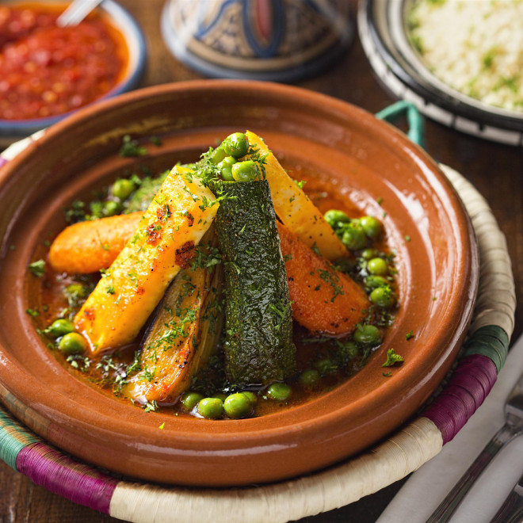

Tagine

Tagine description
Tagine is one of the most popular dishes in morrocco, known by the combination of vegetables, legumes, grains of couscous and meat. It is one of the most complete richest dish and exquisitly delicious.
Tagine's ingredients
- onions
- Oil and spices
- Vegetables or dryed raisins or dried prunes
- Meat either beef or chicken
Tagine' steps
- Cook onions with oil and spices in the tagine dish
- Let the meat cook and marinate in it
- Add vegetables to cook aftertwards
- Let the tagine cook on a slow fire